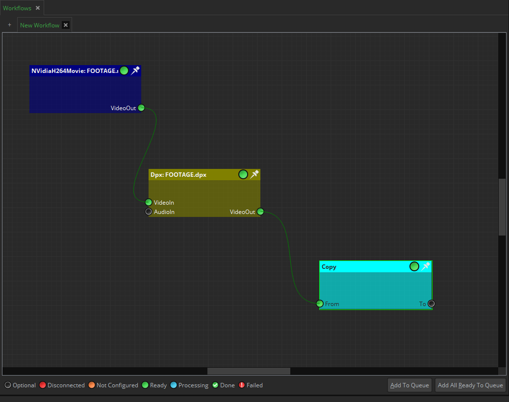
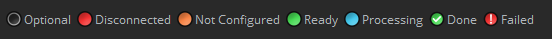
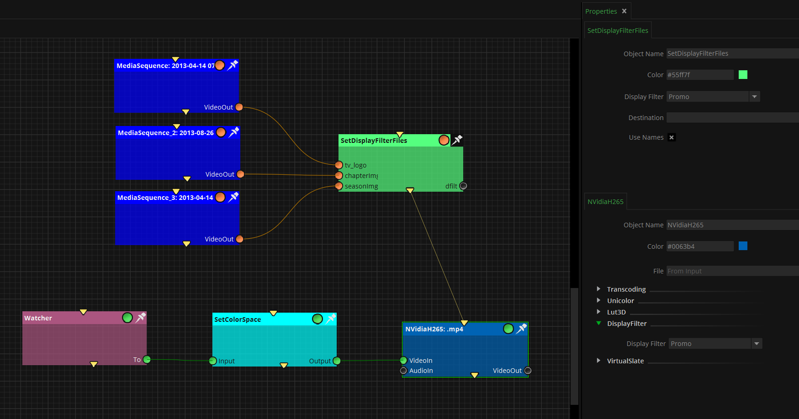

|
<< Click to Display Table of Contents >> Navigation: Mistika Workflows Interface > Connecting the nodes |
Mistika Workflows provides a node based interface, including three types of nodes:
- input nodes for loading or downloading input files. Some of them are generic, while others are specialized on specific image formats, being able to read camera metadata or other format specific details. Specialized download nodes are also provided for getting files from common cloud services such as Aspera, Dropbox, FTP, AWS S3, etc). A special case is the Watcher node, which can track specific folders and execute a workflow when new files appear on it.
- Task nodes for working with the input files and producing other files (transcoders, applying effects and color transformations, python scripts, metadata operations and classification actions, conform, moving / copying / deleting files, etc)
- Output nodes specialized to create complex packages or specialized uploads to cloud services (Aspera, Dropbox, Youtube, FrameIO, FTP, Mail, AWS S3, OneDrive, Slack, Signiant, Tar, etc).
Note: You can use any external file browser to drag & drop media files to the Nodegraph, and the corresponding input node will be created for you.
All those nodes need to be inter-connected in order to define a complete "workflow".
We can add those nodes into the Nodegraph by doing drag & drop from the Finder panel, or by using the Nodegraph Contextual Menu., and once they are in the Nodegraph we can start connecting them.
To do so, first, we import the footage by drag and dropping.
Then we go to the Finder tab and select the DPX node and the Copy node.
Now, let’s connect the nodes. We simply select the AV Out of our footage, and drag the link to the AV In parameter of the DPX Node.
Now, let's repeat the same operation with a Copy node. Now, we have to select a destination folder on each node. We can go inside the node itself and change the Dst. Folder parameter, or we can drag and drop the destination folder to the Copy node from an external browser.
Once the folder is set up correctly, the node will highlight a green light, which means it is ready to work.
Te next step is to click on Add to queue, or in case we have several workflows configured, we can click on Add All ready to queue.
Finally, in the Queue tab we click on Start all to execute the active worflows.

Note that it is also permitted to leave independent branches or "islands" in the same workflow tab. If you do so, all of them will be executed in no particular order, unless you establish priorities using the rank connectors (explained below). Whether you choose to create an independent Workflow tab for each branch or to keep them under a same workflow tab will depend on your criteria, but in general you should only create islands in a same workflow tab when they need to be executed together, even if they are not connected because no common files need to be passed between them. For example, a typical "island" is the Auto Trigger node, which does not need to be connected to anything. If present it will periodically execute every other workflow existing in the same workflow tab.
It is important to understand that what travels trough the connectors are not just independent file paths but "Universal Paths" (UPs)., which are data structures including all the associated files (such as enumerated sequences, checksums, etc) and all the metadata information already extracted from the files. So that any posterior node can still access any metadata obtained in a previous node.
In the case of nodes, the red color indicates that an obligatory connector is not connected yet, the orange color means that some necessary properties have not been set yet. and it becomes green when the node is ready to be executed. A workflow can added to the queue until all the nodes are in green state.
In the case of connectors they follow a similar color code. In addition, the black (transparent) connector means that it is an optional connector.
When executing the workflow additional colors will be used (cyan while the node is being processed, green (with a checkmark) when it has been successfully executed, and red (with "!") when the execution has failed (in which case the failure reason will appear in the render log panel)

These are all the connectors except the audio connectors and rank connectors. An important concept to understand is that in Mistika Workflows what goes trough the connectors are not just "file paths", but also all kinds of file structures alongside with any useful metadata added by previous nodes. This mechanism is explained in the point about "universal paths".
These are a special type of connectors that are used in most media nodes, and they are content aware. Most movie formats support embedded audio, so both the image and audio can go trough a single AV In connector, although it is also possible to switch off their Use AV In property and use the Ext.Audio connector instead. Meanwhile, enumerated sequences do not have AV In capability, but they can still be accompanied with external audio files via the Ext.Audio connector.
Mistika Workflows recognizes and understand certain file structures that are common in media production. When present these file structures are detected automatically, and all the related files belonging to them are kept together without the need for explicit node connections or independent file management. All the files belonging to those structures are also keep together on every copy / move / upload / download / delete actions. Among others:
Enumerated sequences (one file per frame), as defined by the Name Convention fields.
CDL sidecar files: Same name and location as the media files, with .cc added as a second extension at the end.( Example: test.mxf.cdl )
Checksum sidecar files: Same name and location as the media files, with a supported checksum extension added as a second extension at the end ( Example: test.mxf.md5,...)
CSV sidecar metadata files: Same name and location as the media files, with a .csv extension added as a second extension at the end. ( Example: test.mxf.csv)
"Megapacks": These are complex media formats made of multiple files and even their own folder structures (DCPs, Panasonic 8KP2, Sony XDROOT, R3D...). As per the specification of each of those standards.
In general. those structures can also be created in Mistika Workflows by using specialized nodes, which is documented in their specific node topics.
The rank connectors (yellow triangles pointing downwards) permit to establish the execution priority between different node branches of the same workflow, or even independent node islands.
Consider the example in this picture, which corresponds to automated TV promos that requires to compose 3 motion graphics on top of the incoming clips, finally encoding the result to NVidiah265:

Any clip appearing in the Watcher node will trigger the whole workflow execution, which has two parts. The upper part will get 3 motion graphics sequences and configure a display filter that can compose those images on top of a clip. While the bottom part will get any clips appearing in the Watcher folder and it will export a new version using the NVidiaH265 encoder, at which point it needs to apply the display filter that was configured in the upper part in order to compose the motion graphics on top of the clip.
The yellow triangles are the rank connectors. In this example, we wanted the upper Set DisplayFilter Files node to be executed before the NVidiaH265 node below. Without the rank connectors we would have two independent islands of nodes, which is perfectly acceptable when you don't have a specific preference about the execution order. But in this particular case we need the upper branch to be executed first, as they are used to configure a display filter file that we plan to load later in the NVidiaH265 node at the bottom. In a case like this we could not use a standard connector between the two, because nothing is really passed between the nodes that we mention. (The NVidiaH265 node does not have any connector to receive "display filters", it simply has a property that can load a display filter file from disk)
Please note that this is not the same as having the two islands in two different workflow tabs (two consecutive jobs in the queue), because in this case the workflow trigger needs to be the same for both (the Watcher node). In this way, when a new file arrives to the Watcher node both parts of the workflow will be executed automatically (if the workflow is in the queue), and thanks to the rank connectors we can define which part needs to be executed first.
The above example uses two islands, but the rank connectors also work to define priorities between between node branches. For example, in the above example you could replace the 3 MediaSequence nodes by a python node, having its input connected to the Watcher node and its outputs connected to the Set DisplayFilter Files node. Then the python node could use the names of the files appearing in the Watcher node to select the proper graphic files that need to be passed to the Set DisplayFilter Files, rather than using the same images for all cases. In this new example there would be two "branches" interconnected by the Watcher node rather than two "islands". But the rank connectors would work in identical way.